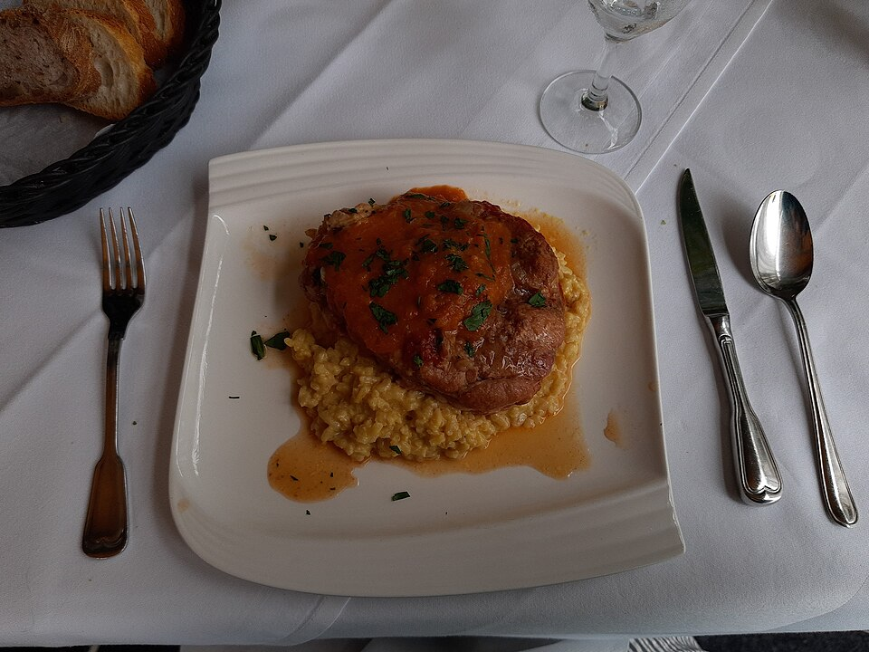

Carnes · Bovinos
Ossobuco de vitela com risotto de rúcula

Ingredientes
- 1 kg de ossobuco de vitela
- 80 ml de vinho branco, 3 folhas de louro, sal, pimenta-branca
- 80 ml de azeite; 4 dentes de alho; 1 cebola; 1 cenoura; 400 g de bacon defumado; ½ alho-poró
- 2 l de caldo de carne; 200 g de purê de tomate; 100 g de champignon frito; 200 g de echalotas fritas
- Caldo: 300 g de músculo, sal, ½ cebola, 1 cenoura, 1 alho, 1 talo de salsão, 1 tomate, 1 batata
- Risotto: 400 g de arroz arbóreo pré-cozido, 1 maço de rúcula, 30 g de manteiga, 100 g de parmesão
Modo de preparo
- Tempere o ossobuco. Refogue cebola, alho e cenoura; junte bacon e alho-poró. Cozinhe o ossobuco no caldo na pressão ~45 min. Reserve ¼ do líquido coado; junte o purê de tomate à carne.
- Prepare o caldo (~2 h) e use coado. Aqueça o arroz no líquido do ossobuco ~4 min; finalize com manteiga e rúcula.
- Sirva risotto com parmesão, ossobuco, champignon e echalotas.
Observação
Dica: passe a carne na farinha e doure antes para mais sabor.